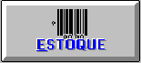

|
|
|
**ELABORAÇÃO DE ORÇAMENTOS COM SUB-TOTAL POR ETAPAS/LOTES (MATERIAIS, MÃO DE OBRA, EQUIPAMENTOS, SERVIÇOS ,FERRAMENTAS, COMPOSIÇÕES). ALTA FLEXIBILIDADE DE OPERAÇÃO E FUNCIONAMENTO COM ALTERNÂNCIA ENTRE CADASTRO E DIGITAÇÃO DOS ORÇAMENTO DIRETAMENTE DOS MÓDULOS SEM A NECESSIDADE DE ABANDONA-LOS. INTEGRAÇÃO COM SISTEMA DE ESTOQUE. |
|
|
**CUSTO DE TODOS OS RECURSOS APLICADOS NA OBRA(MATERIAL, MÃO DE OBRA, EQUIPAMENTOS, VEÍCULOS, FERRAMENTAS, SERVIÇOS, VERBAS, ETC) CONTROLADOS E SUB-TOTALIZADOS SEPARADAMENTE POR CONTA,PERMITINDO CONHECER OS VALORES INCLUSIVE À NÍVEL DE LANÇAMENTO, COM IDENTIFICAÇÃO DE CADA DOCUMENTO E DATA. LANÇAMENTOS POR NOTAS FISCAIS E REQUISIÇÕES. |
|  |
**ENTRADA DE NF, CÁLCULO DO CUSTO DE COMPRA, CÁLCULO DO CUSTO DE APLICAÇÃO, CÁLCULO DO PREÇO MÉDIO FISCAL, HISTÓRICO DAS QUANTIDADES, PREÇOS, DATAS E SALDOS. PASSAGEM PARA O CONTAS A PAGAR E CONTABILIZAÇÃO ATRAVÉS DA NF DE ENTRADA E REQUISIÇÕES COM DIRECIONAMENTO DIRETO AO CUSTO DA OBRA. |
|
**CONTAS A PAGAR , CONTAS A RECEBER, EMISSÃO DE CHEQUES DE PAGAMENTO E QUITAÇÃO DE RECEITAS COM CONTABILIZAÇÃO DIRETA AO RESULTADO DA OBRA, EXIGINDO QUE TODOS OS LANÇAMENTOS SEJAM DIRECIONADOS A UM CENTRO DE CUSTOS , SENDO UMA OBRA OU ADMINISTRAÇÃO GERAL PARA FUTURO RATEIO. |
| **REQUSIÇÃO DE MATERIAL, EQUIPAMENTOS E FERRAMENTAS PARA UTILIZAÇÃO EM OBRAS COM DIRECIONAMENTO E CONTABILIZAÇÃO DE CUSTOS DIRETA PARA A CONTA CORRESPONDENTE. FAZENDO COMPARATIVO DAS QUANTIDADE ORÇADA COM AS REQUISITADAS. PERMITE CONTROLE DE TRAVA DE REQUISIÇÃO COM LIBERAÇÃO SOMENTE COM SENHA DO RESPONSÁVEL PELA OBRA. | |
|
**EMITE PEDIDO DE COMPRAS, COM INCLUSÃO DIRETA DAS QUANTIDADES REQUISITADAS NÃO ATENDIDAS, FAZENDO UM ACOMPNHAMENTO ENTRE O REQUISITADO E PEDIDOS. INDICANDO CADA OBRA E APLICAÇÃO DIRETAMENTE NO PEDIDO. OS PEDIDOS DIGITADOS FICAM GRAVADOS PARA ACOMPANHAMENTO E APROPRIAÇÃO COM A NOTA FISCAL. |
|
.ESTOQUE, VENDAS, NFS, HITÓRICO DO ITEM(Ficha de prateleira, CLIENTES, FORNECEDORES, GRÁFICOS DE PERFORMANCE DE PRODUTOS POR PERÍODOS. |
 |
.RELATÓRIOS DAS VENDAS |
|
.RELATÓRIOS DO ESTOQUE |
 |
. CLICK NO BOTÃO email e peça uma visita |
agilidade, flexibilidade, produtividade com lucratividade <ENTER> , indo diretamente para o próximo campo. sequência de tecla <ESC> volta ao campo inicial, passando pelos campos anterior.
Fones : 9981.6737 Email:vanderlan.tv@hotmail.com
 PLATAFORMA: Microsoft Visual Basic, SQL SERVER, WINDOWS 32 e 64bits
PLATAFORMA: Microsoft Visual Basic, SQL SERVER, WINDOWS 32 e 64bits